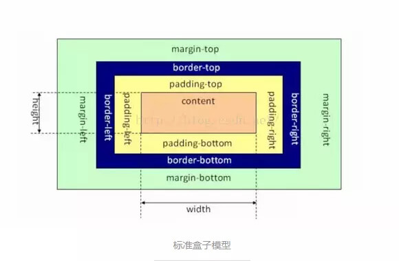

1、基本概念
- 盒模型的组成大家肯定都懂，由里向外content,padding,border,margin.
- 盒模型是有两种标准的，一个是标准模型，一个是IE模型。

标准盒子模型：元素的width或height = content的width或height
标准盒子模型：元素的width或height = content的width或height+padding*2+border*2
2、css如何设置两种模型
/* 标准模型 */
box-sizing:content-box;
/*IE模型*/
box-sizing:border-box;
3、JS获取宽高
-
dom.style.width/height
这种方式只能取到dom元素内联样式所设置的宽高，也就是说如果该节点的样式是在style标签中或外联的CSS文件中设置的话，通过这种方法是获取不到dom的宽高的。
-
dom.currentStyle.width/height
这种方式获取的是在页面渲染完成后的结果，就是说不管是哪种方式设置的样式，都能获取到。但这种方式只有IE浏览器支持。
-
window.getComputedStyle(dom).width/height
这种方式的原理和2是一样的，这个可以兼容更多的浏览器，通用性好一些。
-
dom.getBoundingClientRect().width/height
这种方式是根据元素在视窗中的绝对位置来获取宽高的
-
dom.offsetWidth/offsetHeight
最常用的，也是兼容最好的。